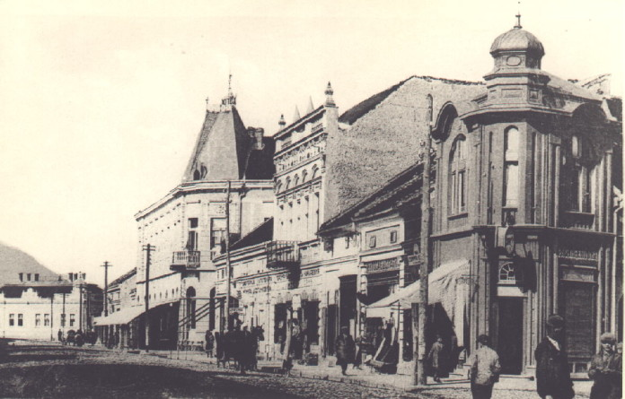

About
Čačak is a city and the administrative center of the Moravica District in central Serbia. It is located in the West Morava Valley within the geographical region of Šumadija. According to the 2011 census, the city proper has 73,331 inhabitants, while the administrative area comprises a total of 115,337 inhabitants. Long known as a spa town, the city lies about 144 km south of the Serbian capital, Belgrade. It is also located near the Ovčar-Kablar Gorge ("Serbian Mount Athos"), with over 30 monasteries built in the gorge since the 14th century.

History
The original name of the town was Gradac (meaning "little town"), which developed around the Moravski Gradac monastery, built in the late 12th century. First mention of the name Čačak was in a document issued by the Republic of Ragusa. Dated on 3 January 1409, it refers to the events from 18 December 1408, and this date is today the official Čačak Town Day.
The town was inhabited in Roman times, with traces of the Roman settlement still visible today, like Roman Thermae built in the 2nd to 4th century period. These still stand behind a secondary school in the center of Čačak.

Food
Most popular food served in Cacak is pečenje. It is roasted meat (whole roasted pork, lamb and goat), and it's one of the most popular dishes in Serbia, specially during all types of celebrations such as weddings or slava. Pečenje can sometimes be very greasy, especially when served cold, which is not uncommon. Besides pečenje you can also find a variety of meat products, such as pljeskavica, ćevapi but also other products such as kajmak , proja , burek and many more.
Tourism
In the vicinity of Čačak there are more than 20 churches and monasteries, the largest number found on such a small area in Serbia. They represent cultural and historic monuments of great significance. The most important ones are the Church of the Ascension of Jesus, a church on Ljubić hill dedicated to Saint Tsar Lazar, as well as the Vujan Monastery located on a nearby mountain of the same name. Special value is attributed to the monasteries of the Ovčar-Kablar Gorge, which as a cultural and historic whole date back to the Middle Ages and represent the particularity of the region's cultural and artistic heritage created over the centuries.
The Ovčar-Kablar Gorge is in western Serbia, halfway between the towns of Čačak (17 kilometers on the east) and Požega on the west, some 155 kilometers south-west of the capital Belgrade.The gorge is a narrow of the West Morava's composite valley, a continuation of the Požega Depression on the west, while itself continuous into the Čačak-Kraljevo Depression on the east. The gorge is carved between the 985 meters high mountain of Ovčar on the south and 889 meters high Kablar on the north, thus gaining its name. The river meanders through the gorge for 15 kilometers. Epigenetic in nature, the Ovčar-Kablar Gorge was crucial for the genesis of the entire West Morava valley (West Pomoravlje).